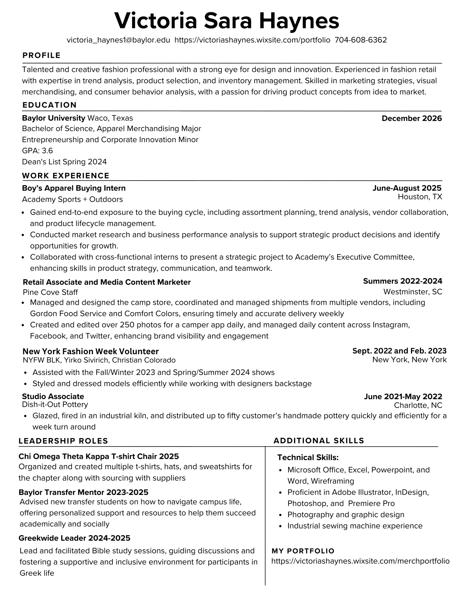

Resume
Apparel Merchandising, Baylor University, graduating December 2026. Minor in Entrepreneurship and Corporate Innovation.
Download the PDF
Work experience
April 2026
New York Bridal Fashion Week Intern
Netta BenShabu, New York City- Assisted in the execution of the Pre-Fall 2027 collection presentation during New York Bridal Fashion Week
- Supported backstage operations, including garment organization, styling coordination, and show preparation
- Collaborated across design, merchandising, and branding teams to keep the presentation cohesive
- Contributed to product presentation and visual storytelling aligned with the brand identity
- Gained hands-on experience in fast-paced show production and luxury brand execution
June to August 2025
Boys' Apparel Buying Intern
Academy Sports + Outdoors, Katy TX- Gained end-to-end exposure to the buying cycle: assortment planning, trend analysis, vendor collaboration, and product lifecycle management
- Conducted market research and business performance analysis to support strategic product decisions and identify growth opportunities
- Presented a strategic cross-functional project to Academy's Executive Committee with the intern team
F/W 23 and S/S 24
New York Fashion Week Volunteer
NYFW BLK, Yirko Sivirich, Christian Colorado- Assisted with the Fall/Winter 2023 and Spring/Summer 2024 shows
- Styled and dressed models efficiently while working with designers backstage
Summers 2022 to 2024
Retail Associate and Media Content Creator
Pine Cove Camps- Managed and designed the camp store, coordinating weekly shipments from vendors including Gordon Food Service and Comfort Colors
- Created and edited 250 photos daily for the camper app and managed content across Instagram, Facebook, and Twitter
June 2021 to May 2022
Studio Associate
Dish-It-Out Pottery, Charlotte NC- Glazed, fired in an industrial kiln, and distributed up to fifty customers' handmade pottery on a one-week turnaround
Leadership
2025 to present
T-Shirt Chair, Chi Omega Theta Kappa
Baylor University- Organized and created t-shirts, hats, and sweatshirts for the chapter while sourcing with suppliers
2024 to present
Greekwide Leader
Baylor University- Led and facilitated Bible study sessions, fostering a supportive and inclusive environment for participants in Greek life
2023 to 2025
Baylor Transfer Mentor
Baylor University- Advised new transfer students on navigating campus life with personalized support and resources to help them succeed academically and socially
Skills
Merchandising
- Assortment and buy planning
- Trend and consumer analysis
- Vendor sourcing and coordination
- Advanced Excel for sales and inventory
Design software
- Adobe Illustrator
- Adobe InDesign
- Adobe Photoshop
- Adobe Premiere Pro
- Microsoft Office and wireframing
Craft and media
- Photography and graphic design
- Industrial sewing machine experience
- Social media content management